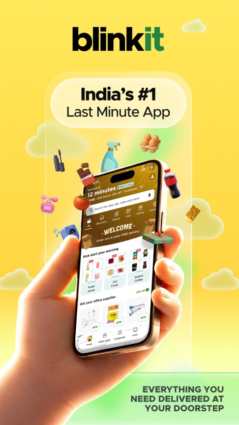
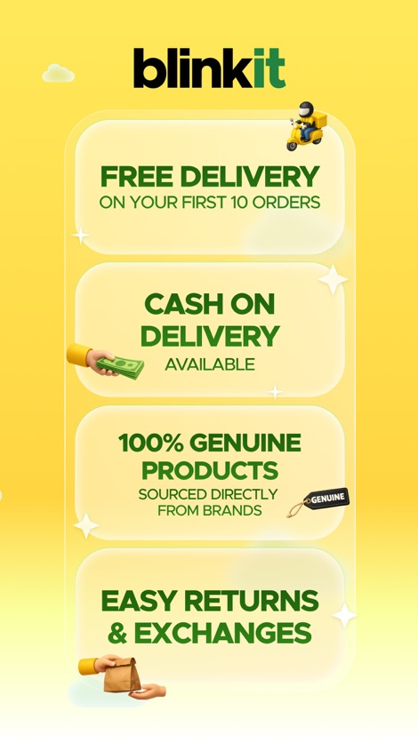
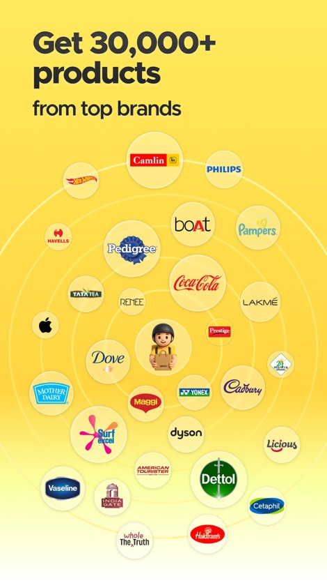
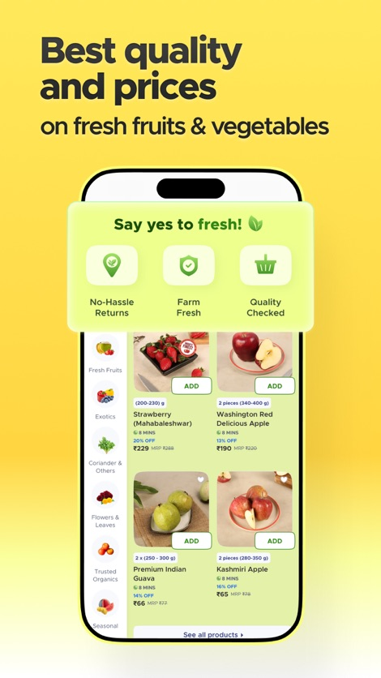

India's largest quick-commerce app — 10-minute grocery delivery from a dense network of dark stores. Owned by Eternal (Zomato). An independent product-analyst teardown.
Blinkit has won the land grab — it's now Eternal's biggest business, bigger than Zomato food delivery, and has turned the margin corner: adjusted EBITDA swung positive to +₹184 Cr (0.9% of order value) in the Sep-2026 quarter, from a loss a year earlier. The job now is holding margin while scaling to 3,500+ stores — an analytics problem of AOV, order frequency, and per-order fulfilment cost.
Open app → items in ~10 minutes. The magic isn't the app; it's the dark-store network — ~2,000–4,000 SKUs per store, placed so 90%+ of a city's demand sits within a ~2 km delivery radius. Speed is the product; density is the moat.




Urban, time-poor households in metros & tier-1 — repeat top-up missions (snacks, staples, last-minute needs), not monthly stock-ups.
Marketplace take rate on GOV + a fast-growing ad / brand-funded layer + delivery & handling fees. Ads are the margin lever.
Density → faster delivery & lower cost-per-order → more orders → more density. A classic local-network flywheel.
Blinkit books order value as revenue under an inventory-led model, which inflates the headline "revenue" line — so net order value (NOV) is the cleaner top-line. On that, Blinkit is now contribution-positive: adjusted EBITDA reached +0.9% of NOV in the Sep-2026 quarter.
Net average order value sits around ~₹518 (Q1 FY27). At ~400M orders a quarter, every ₹10 of AOV is pure leverage on contribution — the single biggest margin dial.
Adjusted EBITDA swung to +₹184 Cr (0.9% of NOV) in the Sep-2026 quarter, from −₹156 Cr a year earlier — and up from +₹102 Cr the prior quarter.
Now that the network is just contribution-positive, the game is widening margin — moving blended contribution another 1–2 points via AOV, ad-load and fulfilment cost. That's where a product analyst earns their seat: finding margin without killing order frequency.
Order value scales almost linearly with dark-store count — more stores mean more covered demand and faster delivery. Blinkit added 308 net stores in the Sep-2026 quarter, reaching 2,751, and raised its target to 3,500 by March 2027.
A dated sample of 600 public Google Play reviews (Blinkit, 2026-11-16 to 2026-11-16). This is real data — the only user-level evidence in this teardown. Reviews are self-selected; user names are not stored. Themes are keyword-tagged, and the average rating per theme shows where the pain is.
Keyword-tagged · sorted by mentions · red average = the pain
Representative reviews · verbatim
The app rates fine, but the money-adjacent themes bite: handling / surge charges (avg 2.68★) and refunds on damaged or poor-quality items (1.67★). Product quality and return friction, not delivery speed, are the complaints — a margin-vs-trust tension as the network pushes AOV.
The company facts above are real. The rest of this section is how I'd instrument and grow the product — the metric tree, the funnel I'd watch, and what retention has to look like. Numbers here are illustrative frameworks, clearly marked.
One number the whole org can move, decomposed into the levers a team actually owns.
Frequency is the q-commerce flywheel: a habitual user ordering 8×/month is worth far more than two casual users — and is far cheaper to keep than to acquire.
q-commerce retention should flatten into a high plateau — the habit, once formed, is sticky (groceries recur). The analyst's job is to shorten time-to-habit: get a new user to their 3rd order fast, because the 3rd-order cohort is where the retention curve stops decaying.
Each tied to one lever in the metric tree, with a primary metric and a guardrail so we don't win one number by breaking another.
| Hypothesis | Lever | Primary metric | Guardrail |
|---|---|---|---|
| Basket-builder — "add ₹60 for free delivery" nudge + complementary suggestions raises basket size. | AOV | AOV, free-delivery attach | Order frequency, cancellations |
| Membership pass — a low monthly fee for free delivery lifts order frequency and lock-in. | frequency | Orders / user / month | Contribution margin / order |
| Honest ETA — show a realistic, accurate delivery time instead of a flat "10 min"; accuracy builds trust & repeat. | retention | D30 repeat rate | Conversion, delivery cost |
| Store-aware assortment — personalise the storefront to each dark store's live in-stock SKUs to cut out-of-stock drop-off. | conversion | Session → order rate | Out-of-stock %, refunds |
Beyond the headlines — the second-order reads a hiring manager actually wants.
NOV grew +79% YoY on roughly +51% more stores (1,816→2,751). Orders are outgrowing the network, so throughput per store is rising — spreading fixed cost across more orders is what tipped EBITDA positive.
Net AOV is flat — ₹518 (Q1 FY27) vs ₹521 a year earlier. Growth is frequency-led, not basket-led, so AOV (basket-builders, bundles, ad-funded placements) is a margin dial Blinkit has barely pulled.
Inventory losses run ~1.8% of NOV (~₹308 Cr a quarter) — the single biggest controllable cost. On razor-thin per-order economics, this is exactly what a DOI & markdown engine defends.
Comparability note: Blinkit's loss figures are segment-level adjusted EBITDA; a private peer's company-level net loss is not an apples-to-apples comparison. Always normalise the denominator before ranking "who burns more."
Eternal Q2 FY27 results (Entrackr, MediaNama, YourStory, Oct 2026) — Blinkit NOV ₹20,940 Cr
(+79% YoY), 2,751 dark stores, adj-EBITDA +₹184 Cr (0.9% of NOV), 398.9M orders · net AOV ~₹518
(Q1 FY27) · BofA / industry aggregators — mid-2025 share estimates · Apple App Store Search API —
live iOS ratings. Figures as of Sep 2026.
Illustrative items (order-economics waterfall, activation funnel, cohort grid) are
analyst frameworks shown to demonstrate method — they are not reported Blinkit figures.